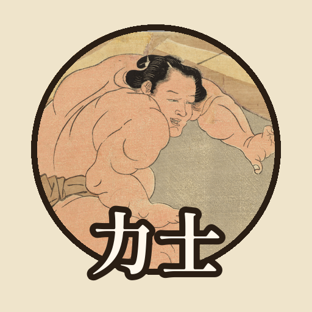

<- all projects

Rikishi
PC
Volume
Live
A sumo game and career sim: train, fight six tournaments a year, reach Yokozuna.
Taro Kudo, 15, is a fisherman's son from a tiny island who has never lost a beach bout. The last master of Kaminari stable scouts him, but the stable has three wrestlers, a leaking roof and no salaried wrestler in twenty years. If it doesn't produce one within five years, it is folded into mighty Tokai, home of Taro's giant rival Otsuchi. Plan every training day, fight six tournaments a year on a ranking sheet of 620 wrestlers across 6 divisions, collect all 82 winning techniques and climb from Jonokuchi to Yokozuna.